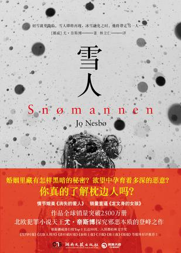

<<<<<<<<<<<<<<<<<<<新书速递>>>>>>>>>>>>>>>>>>
-
《奋斗者》：侯沧海商路笔记 这是一部民企教父的商路传奇奋斗史，也是每一个人的命运打拼史。 从公务员到商人两个身份的变化，从乡镇到全国5个层层递进阶段的摸爬滚打，从餐饮业到房地产9个不同行业的磨砺，以及1次史玉柱式的破产重来，构成了一个首富从草根人物到民企教父的奋斗之路。 20世纪90年代末，正逢国内经济转型、国企改制的风云变幻时代，出身于国有企业工人家庭的侯沧海大学毕业后考入基层政府部门，却与女友两地分居。为了与女友团聚，侯沧海抓住一切机会脱颖而出，女友工作调动却阴差阳错屡次落空。直接领导被调离，冤家对头不断打压，家庭的突变，促使侯沧海痛定思痛，辞职下海，走上创业之路，20年后的山南省首富侯沧海的商路传奇奋斗就此拉开帷幕…… 翻开本书，跟随侯沧海的成长，在中国跌宕起伏的时代变迁20年中，见识一个民企教父的热血发家史。
-
关注度：
65 -
热卖度：
80 -
好评率：
40
-
《雪人》 初雪的夜晚，小男孩从噩梦中醒来，惊觉妈妈不见踪影，院子里凭空出现一个不知是谁堆起的雪人。他当圣诞礼物送给妈妈的粉色围巾，就围在雪人的脖子上，一排由黑色卵石组成的眼睛和嘴巴在月光下闪烁，雪人凝视着屋子，仿佛在微笑…… 一封署名“雪人”的匿名信，开启了警探哈利•霍勒对新近女性失踪案的调查，观察力敏锐、又略显神秘的女警卡翠娜也加入了调查小组。接连失踪的那些女人似乎有着奇怪的共同点。是什么隐秘的动机在驱使罪犯连续作案？以“雪人”为杀人记号的冷血犯人究竟是谁？总是徘徊在酒醉与清醒之间的哈利沉迷于扑朔迷离的案情，越来越无法自拔，几欲疯狂。就在他即将揭开“雪人”真面目的当口，前女友萝凯也被卷入这场致命的追缉。哈利必须牺牲自己，才能救回爱人……
 -
关注度：
55 -
热卖度：
85 -
好评率：
75
<<<<<<<<<<<<<<<<<<<销售榜单>>>>>>>>>>>>>>>>>>
-
《黑匣子思维》 “黑匣子思维”是一种记录和审视失败并从中吸取经验的积极态度。无论是开发新产品、提高运动技能还是做出正确决策，黑匣子思想者们从不惧怕面对失败，反而视失败为学习的最佳途径。他们不会否认过失、推诿责任和想方设法脱身，而会把失败作为样本深入研究，这也是他们获取成功的策略的一部分。 “从失败中学习”也许已经成为老生常谈，本书却揭示了这一已知最有效的学习方法背后令人惊叹的事实，也介绍了世界上一些创新力最强的组织采用的总结失败经验的技巧。缺乏从失败中学习的态度、勇气和能力，会对个体或行业带来严重危害，这些反面例子在生活中并不罕见。千方百计避免犯错并不是我们的目标，相反，从个人生活到组织运转，再到社会文化，无论在哪个层面上，我们都需要学习如何聪明而有意义地犯错，将每一次失败作为测试我们成绩的机会。
-
关注度：
75 -
热卖度：
85 -
好评率：
55